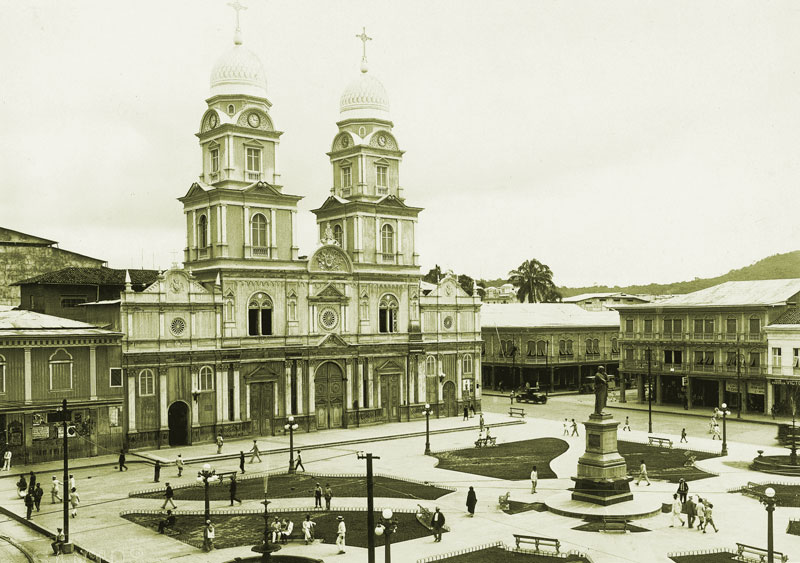
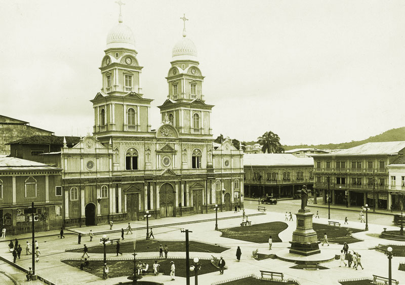

Historia
La iglesia fue construida por francisco Xavier de Garaicoa, nombrado primer Obispo de Guayaquil, sirve como Iglesia Catedral durante más o menos cien años. Pues, elevada a Ia categoría de Catedral el 29 de Enero de 1838, está en servicio hasta 1925, año en que empieza su demolición, si bien continuó prestando servicios mientras se construye Ia nueva Iglesia. En junio de 1922, uno de los razonamientos que se hacen en Ia sesión que se celebra para formar el Comité Pro Reconstrucción de Ia nueva Catedral, se menciona expresamente el estado ruinoso en que se encuentra: ‘Viendo el estado ruinoso y el completo deterioro de Ia Catedral de esta ciudad, y bajo el prudente temor de un lamentable desastre, por ser toda íntegra construida de madera”. Como se ve, en 1922, la Catedral de Guayaquil no solamente era muy antigua, sino que también amenazaba ruina. Esta misma consideración se toma en cuenta en el folleto que se distribuye el día de Ia colocación de primera piedra: “La antigua y bella Catedral de Guayaquil ha sido y es todavía, uno de los mejores ornatos de nuestra ciudad: elegante, por su clásica arquitectura, vistosa por su bien ornamentada fachada, sublime por sus arrogantes fIechas.
La Catedral Metropolitana de Guayaquil (oficialmente Catedral de San Pedro) es una catedral ecuatoriana que se encuentra en pleno centro de Guayaquil, fue construida entre los 1547, cuenta con hermosas torres estilo semi gótico, fue la iglesia matriz a mediados del siglo XVI
Originalmente la catedral fue construida de madera, durante 1590 la edificación se encontraba sobre el cerro Santa Ana, junto a la Casa del Cabildo y la Plaza de Armas, luego el templo fue destruido por un pavoroso incendio en 1692
La actual edificación en concreto se construyó entre 1924 y 1937, actualmente se encuentra en las calles Chimborazo entre la avenida 10 de Agosto y Clemente Ballén.
 
